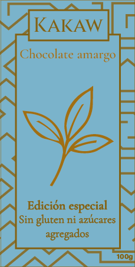

CHOCOLATE

CHOCOLATE AMARGO

CHOCOLATE BLANCO

CHOCOLATE PARA DIABETICOS
Situación
El proyecto surge a partir de la necesidad de desarrollar una identidad
visual sólida para una línea de chocolates artesanales que refleje su
origen natural, calidad y herencia cultural. En un contexto de consumo
donde los compradores valoran lo auténtico y lo artesanal, se buscó destacar
la conexión ancestral del cacao con los pueblos originarios de Mesoamérica,
reivindicando su simbolismo y su historia. La marca “KAKAW” nace de esta raíz
cultural, tomando su nombre del término mesoamericano para el cacao, y se posiciona
como un producto que une tradición, diseño y contemporaneidad.
Tarea
El objetivo principal fue diseñar una línea coherente de envases
que pudiera diferenciar cada variedad (amargo, blanco y sin azúcar/sin TACC)
manteniendo una identidad unificada. El desafío consistía en transmitir la
esencia ancestral del cacao y, al mismo tiempo, adaptar el lenguaje visual a
distintos perfiles de consumidores: quienes buscan sabores intensos, quienes
prefieren lo delicado y quienes priorizan opciones saludables. Además, era
fundamental generar un valor estético y simbólico que posicionara el producto
dentro del segmento premium de chocolates artesanales.
Acción
Se desarrolló una identidad visual basada en tres pilares conceptuales:
origen ancestral, simbología botánica y elegancia visual.
_Para el chocolate amargo, se representó una vaina de cacao
en trazo dorado sobre fondo bordó profundo, con patrones
geométricos inspirados en el arte maya. Este diseño evoca respeto por
la tierra, la tradición y la intensidad del sabor
_En el chocolate blanco, la flor de vainilla
se convierte en protagonista, comunicando suavidad
y refinamiento a través de un trazo dorado sobre fondo claro.
_En la variedad sin azúcar ni gluten, la rama con hojas
simboliza salud y equilibrio, reforzada por una paleta en
celeste y dorado, y la inclusión de sellos oficiales que aportan confianza
El patrón geométrico precolombino se aplicó en las tres presentaciones,
unificando la línea desde lo simbólico y estético. La elección de tipografías
clásicas, paletas armónicas y el uso del dorado consolidan una sensación
de sofisticación y autenticidad.
Resultado
El resultado es una marca con identidad coherente, culturalmente
significativa y visualmente refinada. “KAKAW” logra conectar al
consumidor con las raíces del cacao, mientras se adapta a las
exigencias del mercado contemporáneo.
Cada envase comunica su carácter propio sin romper
la unidad visual del conjunto, ofreciendo una
experiencia sensorial y simbólica completa.
La línea refuerza valores de origen, calidad,
bienestar y diseño consciente, posicionando a
“KAKAW” como un producto que celebra el pasado
ancestral del chocolate a través de una estética moderna, sobria y artesanal.
CHOCOLATE AMARGO
CHOCOLATE BLANCO
CHOCOLATE PARA DIABETICOS